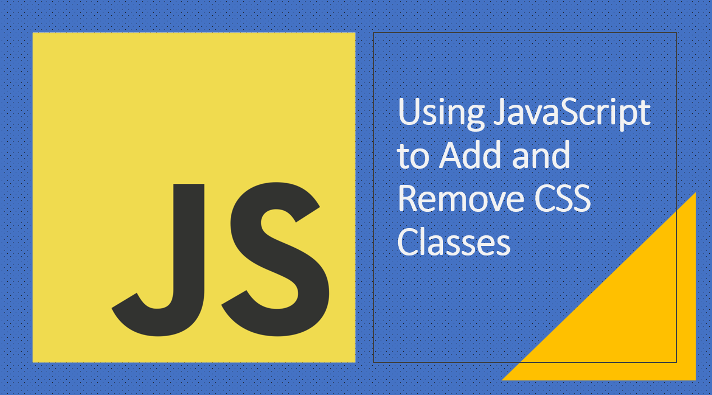

Introduction​
JavaScript provides powerful capabilities for dynamically modifying the appearance and behavior of elements on a web page. One essential feature is the ability to add and remove CSS classes from HTML elements.
In this article, we'll explore how to use JavaScript to manipulate CSS classes, enabling you to create interactive and responsive user interfaces.
Suggested Tutorials 📑:​
Let's explore! 🥳
1. Adding a CSS Class​
You can use the classList property of an element to add a CSS class.
As an example:
const element = document.getElementById('myElement');
element.classList.add('highlight');
In the above example:
- The
getElementById() method is used to retrieve the element with the ID of myElement from the DOM. - The
classList property is used to access the list of CSS classes associated with the element. - The
add() method is used to add the highlight class to the element.
2. Removing a CSS Class​
You can use the classList property of an element to remove a CSS class.
As an example:
const element = document.getElementById('myElement');
element.classList.remove('highlight');
In the above example:
- The
getElementById() method is used to retrieve the element with the ID of myElement from the DOM. - The
classList property is used to access the list of CSS classes associated with the element. - The
remove() method is used to remove the highlight class from the element.
Suggested Tutorials 📑:​
3. Toggling a CSS Class​
You can toggle a CSS class on and off using the toggle() method.
As an example:
const element = document.getElementById('myElement');
element.classList.toggle('active');
In the above example:
- The
getElementById() method is used to retrieve the element with the ID of myElement from the DOM. - The
classList property is used to access the list of CSS classes associated with the element. - The
toggle() method is used to toggle the active class on and off.
4. Checking if an Element has a CSS Class​
You can check if an element has a CSS class using the contains() method.
As an example:
const element = document.getElementById('myElement');
if (element.classList.contains('special')) {
console.log('Element has the "special" class');
}
In the above example:
- The
getElementById() method is used to retrieve the element with the ID of myElement from the DOM. - The
classList property is used to access the list of CSS classes associated with the element. - The
contains() method is used to check if the special class is present on the element.
Suggested Tutorials 📑:​
5. Adding and Removing Multiple CSS Classes​
You can add and remove multiple CSS classes using the add() and remove() methods.
As an example:
const element = document.getElementById('myElement');
element.classList.add('class1', 'class2', 'class3');
element.classList.remove('class1', 'class2', 'class3');
6. Adding and Removing CSS Classes Based on a Condition​
Use JavaScript to conditionally add or remove classes based on user interactions or specific conditions.
As an example:
const button = document.getElementById('toggleButton');
const box = document.getElementById('colorBox');
button.addEventListener('click', () => {
box.classList.toggle('red');
});
In the above example:
- The
getElementById() method is used to retrieve the element with the ID of toggleButton from the DOM. - The
addEventListener() method is used to add a click event listener to the button. - The
classList property is used to access the list of CSS classes associated with the element. - The
toggle() method is used to toggle the red class on and off.
Use JavaScript to conditionally add or remove classes based on user input.
As an example:
const input = document.getElementById('myInput');
const box = document.getElementById('colorBox');
input.addEventListener('input', () => {
if (input.value === 'red') {
box.classList.add('red');
} else {
box.classList.remove('red');
}
});
In the above example:
- The
getElementById() method is used to retrieve the element with the ID of myInput from the DOM. - The
addEventListener() method is used to add an input event listener to the input. - The
classList property is used to access the list of CSS classes associated with the element. - The
add() method is used to add the red class if the input value is red. - The
remove() method is used to remove the red class if the input value is not red.
Suggested Tutorials 📑:​
Conclusion​
By leveraging JavaScript to add and remove CSS classes, you can dynamically modify the appearance and behavior of elements on your web page. This allows you to create interactive features, responsive layouts, and smooth transitions, enhancing user engagement and overall user experience. Whether you're toggling classes based on user actions or applying conditional styling, mastering the art of manipulating CSS classes with JavaScript empowers you to create dynamic and visually appealing web applications.
Happy coding! 🎉